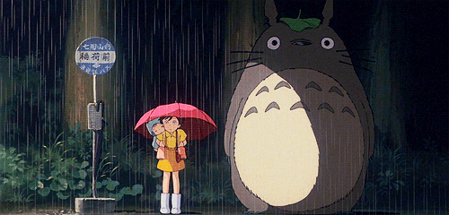

My Favorite Quotes 🌷

| No. | Quotes | Comment |
|---|---|---|
| 1 | "Don't be sorry, be better." | It hits me hard because I'm still stuck in this dark hole where I keep messing things up, apologizing for it, and then repeating the same mistakes over and over again. Changing is difficult, but I refuse to give up on myself. I will keep striving to become a better version of yesterday's me, even if I have to start from the beginning every time I stumble. As long as I keep trying, I know I'm still moving forward. |
| 2 | "Day one, or one day." | The first time I came across this quote was when I saw it on my school mural wall every day before assembly. I know it well, yet I still end up procrastinating and messing things up. It frustrates me so much that I want to prove the quote wrong—but instead, I only end up proving it right. |
| 3 | "Time keeps ticking, act wisely or be left with regret." | Time does not wait for anyone. Seconds turn into minutes, and minutes turn into hours. You can either live with regret for the rest of your life, or start improving yourself and do meaningful things that will benefit your future. |
| 4 | "At the end of the day, all you have is yourself." | I used to fear people leaving me, but I’m learning to let go of that fear. I no longer want to force my presence on others, and instead I’m focusing on becoming a better version of myself. At the end of the day, all you have is yourself—so grow into someone you’re proud of. |
| 5 | "Don’t let anger make decisions you’ll regret later." |
When I get angry about something or at someone, I often end up saying or doing things without thinking them through. Sometimes I can control myself, but most of the time I’m left with an awful feeling of regret.
The more I go through life, the more I realize that I shouldn’t say things I don’t truly mean just because I’m angry, and I also shouldn’t say things I wouldn’t want others to say to me. I’m trying, but I’m still human—I make mistakes and I speak before I think sometimes. |
Cubbies, you can see it, right? I am not an all-bright and positive person. I drain myself and the people around me, and I am fully aware of it. I do want to give up on my life every day; it is so tiring. But I know there is still a 33% part of me that doesn’t want to give up, because all it takes to be good is effort. All talk will not make you a great person. To achieve the thing, you need to do the thing. Failing today does not mean you will fail every day, as long as you keep trying to be better each day.